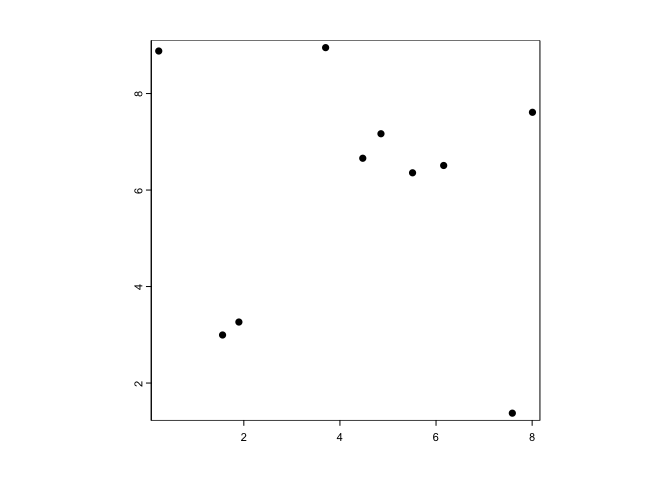
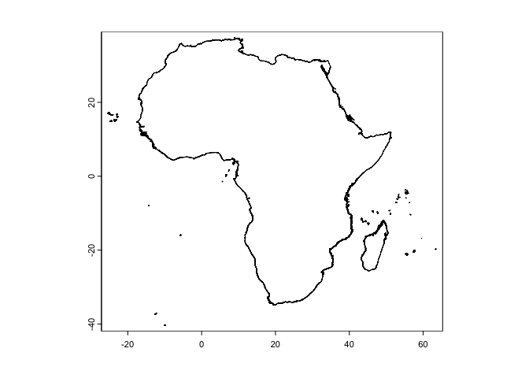
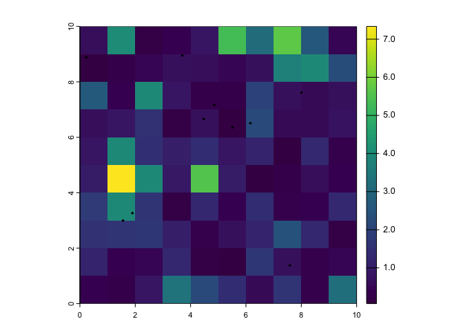
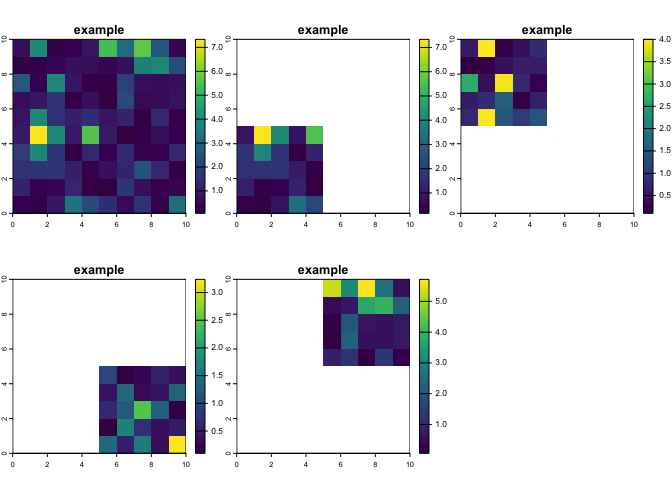
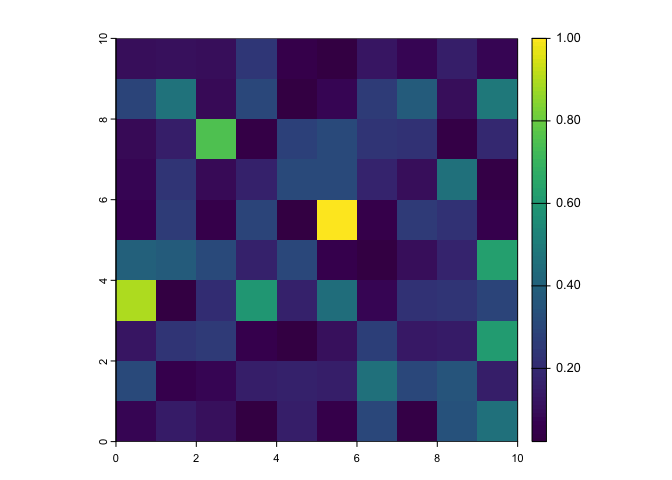
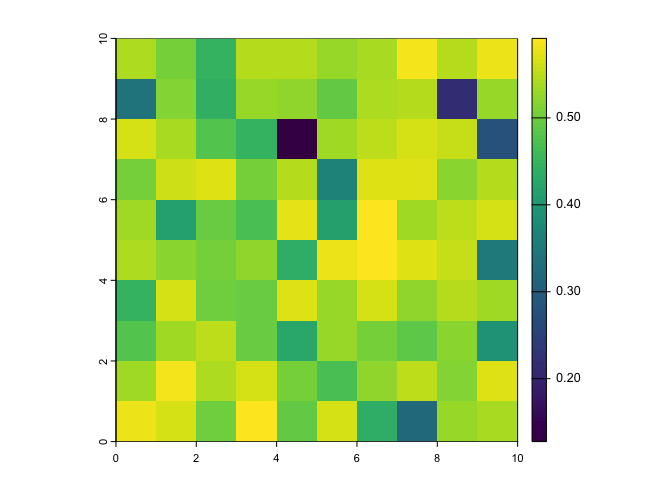

A set of helper functions to facilitate species distribution modelling.
Installation
You can install sdmtools with:
install.packages(
"sdmtools",
repos = "https://idem-lab.r-universe.dev"
)Data
raster_to_terra — an annotated equivalence table of functions from the raster and terra. First 5 lines:
| raster | terra | comment for terra use |
|---|---|---|
| raster, brick, stack | rast | NA |
| rasterFromXYZ | rast(, type=‘xyz’) |
note arg type = xyz
|
| stack, addLayer | c | NA |
| addLayer | add<- | NA |
| area | cellSize or expanse | NA |
global_regions — a tibble showing the WHO region, UN region, and continent for for 249 countries and country-like things. First 5 lines:
| country | iso2 | iso3 | who_region | un_region | continent |
|---|---|---|---|---|---|
| Afghanistan | AF | AFG | Eastern Mediterranean | Asia-Pacific States | Asia |
| Albania | AL | ALB | Europe | Eastern European States | Europe |
| Algeria | DZ | DZA | Africa | African states | Africa |
| American Samoa | AS | ASM | NA | NA | Oceania |
| Andorra | AD | AND | Europe | Western European and other States | Europe |
Data-generating functions
The package terra is fiddly about storing its spat... objects in packages, so we chose to generate example spatial data on-demand using functions, rather than storing it.
example_raster — an example spatRaster.
library(terra)
#> terra 1.8.5
r <- example_raster()
r
#> class : SpatRaster
#> dimensions : 10, 10, 1 (nrow, ncol, nlyr)
#> resolution : 1, 1 (x, y)
#> extent : 0, 10, 0, 10 (xmin, xmax, ymin, ymax)
#> coord. ref. :
#> source(s) : memory
#> name : example
#> min value : 0.0627102
#> max value : 7.3352526
plot(r)example_vector — an example spatVector.
library(terra)
v <- example_vector()
v
#> class : SpatVector
#> geometry : points
#> dimensions : 10, 0 (geometries, attributes)
#> extent : 0.2293562, 8.00672, 1.375653, 8.951683 (xmin, xmax, ymin, ymax)
#> coord. ref. :
plot(v)
make_africa_mask — makes a mask layer of Africa based on shapefiles from malariaAtlas::getShp. Can produce either a SpatRaster or SpatVector.
library(terra)
africa_mask <- make_africa_mask(type = "vector")
#> Loading ISO 19139 XML schemas...
#> Loading ISO 19115 codelists...
#> Please Note: Because you did not provide a version, by default the version being used is 202403 (This is the most recent version of admin unit shape data. To see other version options use function listShpVersions)
#> Start tag expected, '<' not found
#> Start tag expected, '<' not found
#> although coordinates are longitude/latitude, st_union assumes that they are
#> planar
#> Warning: [crs<-] not all geometries were transferred, use svc for a geometry
#> collection
plot(africa_mask)
Function examples
rastpointplot — simple utility to plot a raster with points over it.
rastpointplot(r,v)
source_R — source all R files in a target directory
source_R("/Users/frankenstein/project/R") # do not runimport_rasts — import all rasters from a directory into a single object
rasters <- import_rasts("/data/grids/covariates") # do not runsplit_rast — split a raster.
r <- example_raster()
s <- split_rast(r, grain = 2)
s
#> [[1]]
#> class : SpatRaster
#> dimensions : 5, 5, 1 (nrow, ncol, nlyr)
#> resolution : 1, 1 (x, y)
#> extent : 0, 5, 0, 5 (xmin, xmax, ymin, ymax)
#> coord. ref. :
#> source(s) : memory
#> name : example
#> min value : 0.1587361
#> max value : 7.3352526
#>
#> [[2]]
#> class : SpatRaster
#> dimensions : 5, 5, 1 (nrow, ncol, nlyr)
#> resolution : 1, 1 (x, y)
#> extent : 0, 5, 5, 10 (xmin, xmax, ymin, ymax)
#> coord. ref. :
#> source(s) : memory
#> name : example
#> min value : 0.1028045
#> max value : 4.0001839
#>
#> [[3]]
#> class : SpatRaster
#> dimensions : 5, 5, 1 (nrow, ncol, nlyr)
#> resolution : 1, 1 (x, y)
#> extent : 5, 10, 0, 5 (xmin, xmax, ymin, ymax)
#> coord. ref. :
#> source(s) : memory
#> name : example
#> min value : 0.09802478
#> max value : 3.23820739
#>
#> [[4]]
#> class : SpatRaster
#> dimensions : 5, 5, 1 (nrow, ncol, nlyr)
#> resolution : 1, 1 (x, y)
#> extent : 5, 10, 5, 10 (xmin, xmax, ymin, ymax)
#> coord. ref. :
#> source(s) : memory
#> name : example
#> min value : 0.0627102
#> max value : 5.7145289
Functions for a species distribution modelling workflow
We have some covariate layers: cov1 and cov2
library(terra)
cov1 <- example_raster(
seed = -44,
layername = "cov1"
)
cov2 <- example_raster(
seed = 15.3,
layername = "cov2"
)
covs <- c(cov1, cov2)std_rast — standardise a spatRaster by transforming it to have a range of 0—1

We have some presences and absences
presences <- example_vector(seed = 68) %>%
as.data.frame(geom = "xy")
absences <- example_vector(seed = 9.6) %>%
as.data.frame(geom = "xy")
presences
#> x y
#> 1 9.244899 5.033042
#> 2 6.612025 1.559797
#> 3 4.024099 8.750261
#> 4 6.370063 4.438317
#> 5 3.526324 6.598762
#> 6 7.476441 7.754586
#> 7 7.175489 8.123659
#> 8 1.935898 5.082858
#> 9 3.331217 7.974853
#> 10 1.365547 5.741829extract_covariates — extract covariate values from spatRaster or raster layers for a given set of points
Pass in either presences and absences as a data.frame or tibble of with , or presences_and_absences as a single data frame points with a presence or ID column(s)
sdm_data <- extract_covariates(
covariates = covs,
presences = presences,
absences = absences
)We can then make a spatial prediction of our model using predict_sdm and write and read it out in a single step with writereadrast, and write it to a temporary file with temptif:
# first we make a simple model, using data from above
m <- glm(presence ~ cov1 + cov2, data = sdm_data)
prediction_rast <- predict_sdm(m, covs) |>
writereadrast(filename = temptif())
plot(prediction_rast)